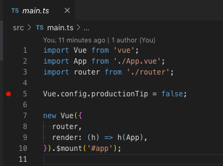

<!DOCTYPE html>
<html lang="en">
  <head>
    <meta charset="utf-8" />
    <meta name="viewport" content="width=device-width, initial-scale=1.0, maximum-scale=1.0, user-scalable=no" />

    <title>Vue.js入門</title>
    <link rel="stylesheet" href=".\../css/reveal.css" />
    <link rel="stylesheet" href=".\../css/theme/white.css" id="theme" />
    <link rel="stylesheet" href=".\../css/highlight/vs2015.css" />
    <link rel="stylesheet" href=".\../css/print/paper.css" type="text/css" media="print" />
    <link rel="stylesheet" href=".\../_assets/src/css/sitoolkit.css" />

  </head>
  <body>
    <div class="reveal">
      <div class="slides"><section  data-markdown><script type="text/template">

# Vue.js 入門

# ハンズオン
</script></section><section  data-markdown><script type="text/template">
### このハンズオンは

**対象者**

Vue.js を使ったことが無い人

**前提知識**

HTML、CSS、JavaScript、Java 等のオブジェクト指向言語の基礎

**目標**

Vue.js を使って SPA が作成できるようになること
</script></section><section  data-markdown><script type="text/template">
### 目次

- 開発環境の構築
  - 必要なソフトウェアのインストール
  - 開発ツールの設定
- プロジェクト構成の把握
  - ディレクトリ構成
  - ファイルの種類
- 標準機能の把握
  - 体裁の実装
  - イベントハンドラの実装
  - 画面遷移の実装
</script></section><section  data-markdown><script type="text/template">
## 開発環境の構築
</script></section><section  data-markdown><script type="text/template">
### 必要なソフトウェア (1/2)

ハンズオンでは以下のソフトウェアを使用します。
リンク先のガイダンスに従い各ソフトウェアをインストールして下さい。

- <a href="https://www.google.com/intl/ja_jp/chrome/" target="chrome">Chrome</a>
- <a href="https://nodejs.org/ja/" target="Node.js">Node.js</a>
- <a href="https://yarnpkg.com/lang/ja/" target="Yarn">Yarn</a>
- <a href="https://code.visualstudio.com/" target="Visual Studio Code">Visual Studio Code</a>
  - <a href="https://marketplace.visualstudio.com/items?itemName=msjsdiag.debugger-for-chrome" target="Debugger for Chrome">Debugger for Chrome</a>
  - <a href="https://marketplace.visualstudio.com/items?itemName=mubaidr.vuejs-extension-pack" target="Vue.js Extension Pack">Vue.js Extension Pack</a>
</script></section><section  data-markdown><script type="text/template">
### 必要なソフトウェア (2/2)

Vue.js SPA 開発用 CLI ツールをインストールします。

コマンドプロンプト(Windows) / ターミナル(macOS)で以下のコマンドを実行してください。

```sh

yarn global add @vue/cli


```

補足: Vue.js はこの CLI 等を使わず、通常の HTML に組み込んで使うこともできます。使い方は
<a href="https://jp.vuejs.org/v2/guide/installation.html#lt-script-gt-%E7%9B%B4%E6%8E%A5%E7%B5%84%E3%81%BF%E8%BE%BC%E3%81%BF" target="_blank" >こちら</a>
を参照してください。
</script></section><section  data-markdown><script type="text/template">
### プロジェクト作成 1/2

Vue.js のプロジェクトを作成します。

コマンドプロンプト(Windows) / ターミナル(macOS)で以下のコマンドを実行してください。

```sh

cd /path/to/your/workspace
vue create vue-project


```

コマンドを実行するとプロジェクトの設定を選択する対話モードが始まります。
</script></section><section  data-markdown><script type="text/template">
### プロジェクト作成 2/2

対話モードで**Manually select features**を選択し、以下の feature を選択してください。

```sh
? Please pick a preset:
  default (babel, eslint)
❯ Manually select features

? Check the features needed for your project:
 ◉ Babel
 ◉ TypeScript
 ◯ Progressive Web App (PWA) Support
 ◉ Router
 ◯ Vuex
 ◉ CSS Pre-processors
 ◉ Linter / Formatter
 ◯ Unit Testing
 ◯ E2E Testing
```

以降の個別の選択では全てデフォルトを選択してください。
</script></section><section  data-markdown><script type="text/template">
### プロジェクトを開く

プロジェクト作成が終了したら、以下のコマンドを実行し VSCode でプロジェクトを開きます。

```sh

code vue-project


```

code コマンドが有効化されていない場合は、VSCode を手動で起動し、
**ファイル**メニュー＞**開く**から上記の vue-project フォルダを選択してください。

以降の説明は特に断りのない限り VSCode の操作です。
</script></section><section  data-markdown><script type="text/template">
### デバッグの設定 1/2

**vue-project**フォルダ直下に**vue.config.js**ファイルを作成し、
以下の内容を貼り付けて保存します。

```js
module.exports = {
  configureWebpack: {
    devtool: "source-map"
  }
};
```
</script></section><section  data-markdown><script type="text/template">
### デバッグの設定 2/2

**vue-project**フォルダに**.vscode**フォルダを作成し、
その中に**launch.json**ファイルを作成します。
**launch.json**ファイルには以下の内容を貼り付けて保存します。

```json
{
  "version": "0.2.0",
  "configurations": [
    {
      "type": "chrome",
      "request": "launch",
      "name": "vuejs: chrome",
      "url": "http://localhost:8080",
      "webRoot": "${workspaceFolder}/src",
      "breakOnLoad": true,
      "sourceMapPathOverrides": {
        "webpack:///./src/*": "${webRoot}/*"
      }
    }
  ]
}
```
</script></section><section  data-markdown><script type="text/template">
### 開発サーバーの起動

1. **ターミナル**メニュー＞**新しいターミナル**を選択します。
2. 表示された**ターミナル**ビューで以下のコマンドを実行します。

```

yarn serve


```

開発サーバーが起動し、
<a href="http://localhost:8080" target="vue-project">http://localhost:8080</a>
で vue-project にアクセスできるようになります。
</script></section><section  data-markdown><script type="text/template">
### デバッグの開始

**src/main.ts**ファイルを開き、
5 行目の行番号の左をクリックしてブレークポイントを設定します。



**デバッグ**メニュー＞**デバッグの開始**を選択します。

Chrome が起動し、上記の位置で処理が一時停止します。
</script></section><section  data-markdown><script type="text/template">
### LiveReload

開発サーバーを使用するとsrcディレクトリ以下の変更は即座にブラウザに反映されます。(LiveReload機能)

Home.vueの以下の2行をコメントアウトして保存します。

```xml
<template>
  <div class="home">
    <!-- 
    <HelloWorld msg="Welcome to Your Vue.js + TypeScript App"/> -->
  </div>
</template>
```

**ターミナル**ビューにトランスパイルのログが出力され、ブラウザは自動的に再描画されて変更後の状態が表示されます。(上記の変更ではVue.jsのロゴ以下が消えます。)
</script></section><section  data-markdown><script type="text/template">
## プロジェクト構成の把握
</script></section><section  data-markdown><script type="text/template">
### ディレクトリ構成

Vue プロジェクトの主要なディレクトリとファイルは以下のものです。
src ディレクトリ以下のファイルが js や css にトランスパイルされて実行モジュールになります。

```
vue-project             // プロジェクトルート
├── src                 // ソースファイルを配置するディレクトリ
│   ├── App.vue
│   ├── components      // コンポーネントのvueファイルを配置するディレクトリ
│   │   └── HelloWorld.vue
│   ├── main.ts         // プロジェクトで最初に処理されるファイル
│   ├── router.ts       // 画面のパスを定義するファイル
│   └── views           // 画面のvueファイルを配置するディレクトリ
│       ├── About.vue
│       └── Home.vue
```
</script></section><section  data-markdown><script type="text/template">
### ファイルの種類

- vue ファイル
  - Vue コンポーネント(画面全体、または画面の部品)を実装するファイル
  - HTML、TypeScript、CSS(拡張含む)で実装
- ts ファイル
  - Vue コンポーネント以外の処理を実装するファイル
  - TypeScript で実装

**補足** Vue.js は TypeScript を使用せず JavaScript で実装することもできます。
</script></section><section  data-markdown><script type="text/template">
### main.ts

main.ts はプロジェクトのエントリーポイントとなるファイルです。
ルートとなる Vue コンポーネントを生成し、プロジェクト全体に関わる設定を行います。

```ts
import Vue from "vue";
// プロジェクト内のファイルは相対パスで参照
import App from "./App.vue";
// tsファイルは拡張子を省略可能
import router from "./router";

Vue.config.productionTip = false;

// ルートとなるVueコンポーネントを生成
new Vue({
  router,
  render: h => h(App)
}).$mount("#app");
```
</script></section><section  data-markdown><script type="text/template">
### router.ts

router.ts は画面の vue クラスを
<a href="https://router.vuejs.org/ja/" target="vue-router">vue-router</a>
を使用して vue クラスのパスを定義します。

```ts
import Vue from 'vue';
import Router from 'vue-router';
// 画面のvueクラスをimport
import Home from './views/Home.vue';

Vue.use(Router);

export default new Router({
  mode: 'history',
  base: process.env.BASE_URL,
  routes: [
    {
      path: '/',       // vueクラスのパスを定義
      name: 'home',
      component: Home,
    },
```

ここで定義されたパスにブラウザでアクセスすると、
vue コンポーネントの描画結果が表示されます。
</script></section><section  data-markdown><script type="text/template">
### vue ファイル

template タグ内に"HTML の原型"を実装します。

script タグ内に Vue クラスを実装します。

**重要** Vue クラスのフィールドやメソッドは template 内で参照できます。

```xml
<template>
  <div>
     <input v-model="field" @change="method"/>
     {{field}}
  </div>
</template>

<script lang="ts">
export default class View extends Vue {

  field = 'value'

  method() {
    console.log(this.field);
  }
}
__SCRIPT_END__

```
</script></section><section  data-markdown><script type="text/template">
### App.vue

App.vue はルートとなる vue コンポーネントです。
components ディレクトリや views ディレクトリ以下で作成した vue コンポーネントは、
App.vue やその子コンポーネントに組み込んで使用します。

```xml
<template>
  <div id="app">
    <div id="nav">
      <router-link to="/">Home</router-link> |
      <router-link to="/about">About</router-link>
    </div>
    <!-- router.tsで定義したパスに一致するvueコンポーネントが表示される -->
    <router-view/>
  </div>
</template>

<style lang="scss">
  :
</style>
```
</script></section><section  data-markdown><script type="text/template">
# 標準機能の把握
</script></section><section  data-markdown><script type="text/template">
### 画面の実装

実際に画面を実装しながら Vue.js の標準機能を理解します。

**題材** : Home.vue に以下のような検索画面を実装します。

<a href="list.html" target="_blank">検索画面サンプル</a>


HTMLはこのサンプルのものを使ってもよいです。
サンプルを開いたら**右クリック**＞**ページのソースを表示**を選択するとHTMLが表示されます。
</script></section><section  data-markdown><script type="text/template">
### 実装ステップ

以下の順に実装を進めます。

1. 検索条件の入力フォームを実装
2. 検索ボタンのイベントハンドラを実装
3. 検索結果の一覧をダミーデータで実装
4. ダミーデータをサーバーから取得して一覧に表示
5. 詳細画面を実装

各ステップでは Vue.js の標準ガイドや参考にしながら実装します。
</script></section><section  data-markdown><script type="text/template">
### JavaScript Style と TypeScript Style

当ハンズオンでは TypeScript を採用していますが、標準ガイドは JavaScript で記載されています。

以下の TypeScript で実装された Vue コンポーネントは標準ガイド<a href="https://jp.vuejs.org/v2/guide/events.html#%E3%83%A1%E3%82%BD%E3%83%83%E3%83%89%E3%82%A4%E3%83%99%E3%83%B3%E3%83%88%E3%83%8F%E3%83%B3%E3%83%89%E3%83%A9" target="_blank">この JavaScript での実装</a>と同じです。

```ts
export default class Example2 extends Vue {
  // jsでのdataプロパティ以下は
  // tsでのクラスのフィールドに対応します。
  name = "Vue.js";

  // jsでのmethosプロパティ以下は
  // tsでのクラスのメソッドに対応します。
  greet(event) {
    alert("Hello " + this.name + "!");
    if (event) {
      alert(event.target.tagName);
    }
  }
}
```
</script></section><section  data-markdown><script type="text/template">
### 検索条件の入力フォームを実装

User Id テキストボックスと検索ボタンを実装します。
テキストボックスの入力値を Vue コンポーネントにフィールドにバインドします。

**参考**

<a href="https://jp.vuejs.org/v2/guide/forms.html" target="_blank">フォーム入力バインディング</a>
</script></section><section  data-markdown><script type="text/template">
### 検索ボタンのイベントハンドラを実装

以下の挙動を実装します。

1. 検索ボタンをクリックする。
2. User Id テキストボックスの入力値がアラートで表示される。

**参考**

<a href="https://jp.vuejs.org/v2/guide/events.html" target="_blank">イベントハンドリング</a>
</script></section><section  data-markdown><script type="text/template">
### 検索結果の一覧をダミーデータで実装

Home クラスに以下の json データを持つフィールドを定義します。

```json
[
  { "id": "001", "name": "Tanaka" },
  { "id": "002", "name": "Tamura" },
  { "id": "003", "name": "Nakata" }
]
```

このフィールドを使用し template で検索結果の一覧を実装します。

**参考**

<a href="https://jp.vuejs.org/v2/guide/list.html" target="list">リストレンダリング</a>
</script></section><section  data-markdown><script type="text/template">
### ダミーデータをサーバーから取得して一覧に表示 1/4

プロジェクト直下に db.json ファイルを作成し、以下の内容を貼り付けます。

```json
{
  "users": [
    { "id": "001", "name": "Tanaka" },
    { "id": "002", "name": "Tamura" },
    { "id": "003", "name": "Nakata" }
  ]
}
```
</script></section><section  data-markdown><script type="text/template">
### ダミーデータをサーバーから取得して一覧に表示 2/4

1. 新しいターミナルビューを起動します。
2. 以下のコマンドで json-server をインストールし、起動します。

```

yarn global add json-server
json-server --watch db.json


```

3. ブラウザで <a href="http://localhost:3000/users" target="_blank">http://localhost:3000/users</a> を開きます。
4. <a href="https://www.npmjs.com/package/json-server" target="_blank">json-server の使い方</a>を参考に、ダミーデータの検索ができることを確認します。
</script></section><section  data-markdown><script type="text/template">
### ダミーデータをサーバーから取得して一覧に表示 3/4

1. 開発サーバーを停止します。
2. 以下のコマンドで axios をインストールし、開発サーバーを再起動します。

```

yarn add axios
yarn serve


```
</script></section><section  data-markdown><script type="text/template">
### ダミーデータをサーバーから取得して一覧に表示 4/4

以下の挙動を実装します。

1. 検索ボタンをクリックしたらダミーデータを HTTP GET する。
2. GET したダミーデータを検索一覧に描画する。

**参考**

<a href="https://github.com/axios/axios#example" target="axios">axios Example</a>
</script></section><section  data-markdown><script type="text/template">
### 詳細画面を実装 1/2

詳細画面を実装し、検索画面からリンクを貼ります。

1. views ディレクトリ以下に Detail.vue ファイルを作成します。
2. router.ts に Detail.vue へのパスを設定します。
3. Home.vue の User Id に Detail.vue へのリンクを実装します。

リンクの User Id の連携はこの次の手順で行います。
まずは詳細画面に遷移できるところまでを実装してください。

**参考**

<a href="https://router.vuejs.org/ja/guide/#html" target="router">Vue Router</a>
</script></section><section  data-markdown><script type="text/template">
### 詳細画面を実装

1. router.ts でパスに動的セグメントを追加します。
2. Home.vue のリンクに UserId を含めます。
3. Detail.vue のインスタンスライフサイクルフックでパスの UsrId を取得します。
4. 取得した UserId をキーにサーバーからユーザー情報を取得します。

**参考**

<a href="https://router.vuejs.org/ja/guide/essentials/dynamic-matching.html" target="dynamicroutematching">動的ルートマッチング</a>

<a href="https://jp.vuejs.org/v2/guide/instance.html#%E3%82%A4%E3%83%B3%E3%82%B9%E3%82%BF%E3%83%B3%E3%82%B9%E3%83%A9%E3%82%A4%E3%83%95%E3%82%B5%E3%82%A4%E3%82%AF%E3%83%AB%E3%83%95%E3%83%83%E3%82%AF" target="lifecyclehook">インスタンスライフサイクルフック</a>
</script></section><section  data-markdown><script type="text/template">
### まとめ

- Vue 実装時に使用するファイルの種類は vue, ts(js)
- main.ts はプロジェクト実行時の開始地点
- router.ts はパスのマッピングを設定
- App.vue は Vue コンポーネントの開始地点
- 「Vue Router」でコンポーネント中に別コンポーネントの埋め込みが可能
- 「動的ルートマッチング」で URL をパターンマッチ認識可能
- 「インスタンスライフサイクルフック」でインスタンス生成時に任意の処理が可能
</script></section><section  data-markdown><script type="text/template">
### ご清聴ありがとうございました。

### ハンズオンお疲れさまでした。
</script></section></div>
    </div>

    <script src=".\../js/reveal.js"></script>

    <script>
      function extend() {
        var target = {};
        for (var i = 0; i < arguments.length; i++) {
          var source = arguments[i];
          for (var key in source) {
            if (source.hasOwnProperty(key)) {
              target[key] = source[key];
            }
          }
        }
        return target;
      }

      // Optional libraries used to extend on reveal.js
      var deps = [
        { src: '.\../plugin/markdown/marked.js', condition: function() { return !!document.querySelector('[data-markdown]'); } },
        { src: '.\../plugin/markdown/markdown.js', condition: function() { return !!document.querySelector('[data-markdown]'); } },
        { src: '.\../plugin/highlight/highlight.js', async: true, callback: function() { hljs.initHighlightingOnLoad(); } },
        { src: '.\../plugin/zoom-js/zoom.js', async: true },
        { src: '.\../plugin/notes/notes.js', async: true },
        { src: '.\../plugin/math/math.js', async: true }
      ];

      // default options to init reveal.js
      var defaultOptions = {
        controls: true,
        progress: true,
        history: true,
        center: true,
        transition: 'default', // none/fade/slide/convex/concave/zoom
        dependencies: deps
      };

      // options from URL query string
      var queryOptions = Reveal.getQueryHash() || {};

      var options = extend(defaultOptions, {"transition":"fade","slideNumber":true}, queryOptions);
    </script>


    <script>
      Reveal.initialize(options);
    </script>
  </body>
</html>
